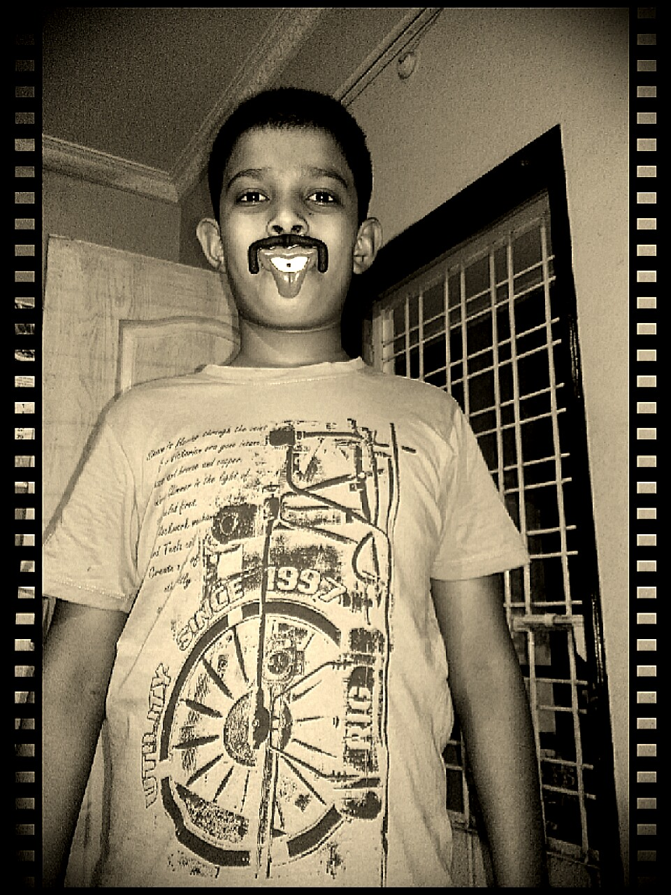

Atharva Bonde
I'm like ketchup , I go good on everything

VIT26
Computer Engineering student at Vishwakarma Institute of Technology ,Pune ,Maharastra , India
Education
- Middle School
NEERI Modern School , Nagpur
- High School
Shivaji Science College , Nagpur
- Current pursueing B.Tech Engineering in Computer Science in VIT , pursueing
Work Experience
- Head of Sponsorship at TEDxVITPune 2023 :-
Key Responsibilities
- Approaching Senior HR Head of Multi Cap companies.
- Convincing PR team of partnering with TEDxVITPune for
TEDxVITPune 2023.
- Prepare database of companies with detailed info suh a local
branch location , HR head's contact details
- F.Y. Secretary at E.P.E.C. :-
Key Responsibilities
- Planning Induction /Orientation Program for freshers for A.Y.2023.
- Making scheduleof Whole induction event and ensuring smooth execution of the same.
- Ensuirng timely deliverance of Club updates to the students of VIT Pune
- Under Secretary General : Secretarait of Delegate Affairs :-
Key Responsibilities
- Managing the databes of all the applicants.
- Allocating portfolios to al the participants according to their experience
- Signing several MOUs with several colleges/schools of Pune
Skills